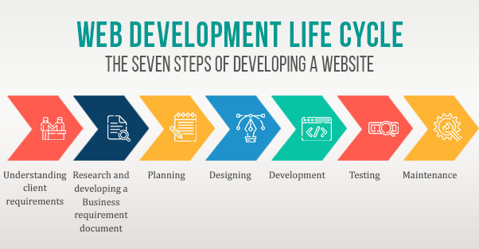

Welcome to the Web Development Cycle!
Welcome! In this website, you will learn about the various stages of the Web Development Cycle. In case you aren't aware, the Web Development Cycle is a process consisting of 7-8 stages that many web developers follow in order to create a website. Hopefully by looking through each section you will learn something new about the cycle!
Below are all of the stages that this website will be discussing
- Information Gathering
- Strategy
- Content Writing/Assembly
- Design
- Development
- Testing
- Launch
- Maintenance